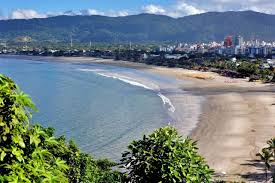
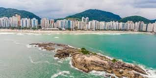
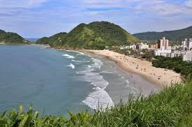

| Home praias contato | |
Praias de GuarujáPraia da EnseadaA Praia da Enseada é a maior e uma das mais famosas de Guarujá. Com cerca de 5,6 km de extensão, possui uma larga faixa de areia dourada e águas tranquilas, ideais para banho e esportes aquáticos como stand-up paddle e jet ski. A infraestrutura é excelente, contando com quiosques, restaurantes e hotéis à beira-mar. Durante a alta temporada, recebe muitos turistas e costuma ser bastante movimentada. Sua areia clara e fofa, junto com o mar de águas calmas, faz dela uma opção ideal para famílias e para quem busca um ambiente relaxante. O local conta com ótima infraestrutura, oferecendo quiosques, restaurantes, hotéis e até passeios de banana boat. Além disso, a Enseada é palco de eventos esportivos e culturais, como campeonatos de surf, shows e competições de jet ski. O calçadão e a ciclovia que acompanham a praia são ideais para caminhadas e passeios de bicicleta. Outra grande atração é o Acqua Mundo, um dos maiores aquários da América do Sul, onde os visitantes podem ver tubarões, raias e outras espécies marinhas. Curiosidade: Durante o inverno, a água da Praia da Enseada costuma ficar mais cristalina devido à menor quantidade de sedimentos suspensos no mar. Além disso, é aqui que fica o Acqua Mundo, um dos maiores aquários da América do Sul. Praia de PitangueirasA Praia de Pitangueiras é o coração de Guarujá, localizada no centro da cidade e cercada por altos prédios. Com cerca de 1,8 km de extensão, tem ondas moderadas, sendo procurada tanto por banhistas quanto por surfistas. Sua infraestrutura é excelente, com restaurantes, bares e comércios próximos, além do calçadão movimentado. As ondas em Pitangueiras podem variar bastante conforme a maré, o que atrai surfistas e banhistas. Em algumas épocas do ano, o mar pode ficar mais agitado, tornando-se um desafio para iniciantes no surf. No entanto, também há trechos onde o mar fica mais calmo, ideal para quem quer apenas curtir um banho de mar.
Um dos destaques da praia é o Morro do Maluf, um mirante natural que oferece uma vista panorâmica incrível e é muito procurado por praticantes de parapente e trilheiros. À noite, a região de Pitangueiras continua agitada, com bares, restaurantes e lojas abertas até tarde. Curiosidade: O Morro do Maluf, localizado em uma de suas extremidades, é um dos melhores pontos para observar a praia de cima e também um local popular para a prática de parapente. Praia de TomboA Praia do Tombo é uma das mais famosas de Guarujá e se destaca por suas ondas fortes, sendo um dos melhores pontos do litoral paulista para a prática de surf. Com aproximadamente 900 metros de extensão, a praia tem um ambiente mais preservado e é cercada por morros cobertos de vegetação. A Praia do Tombo é uma das mais preservadas e selvagens de Guarujá. Com apenas 900 metros de extensão, é conhecida pelas ondas fortes e tubulares, que fazem dela um dos melhores points de surf do estado de São Paulo. Sua geografia é única, com um fundo que se aprofunda rapidamente, dando origem ao nome " Tombo ". Por sua qualidade ambiental e segurança, a Praia do Tombo recebeu a certificação Bandeira Azul, um selo internacional que poucas praias no Brasil possuem. O local tem uma atmosfera mais tranquila e um público mais seleto, formado por surfistas e pessoas que buscam um ambiente menos comercial. Embora tenha uma infraestrutura menor que as praias vizinhas, o Tombo conta com alguns quiosques e restaurantes rústicos, oferecendo um clima mais alternativo. O mar aqui não é indicado para crianças, devido às ondas fortes e correntezas. Curiosidade: A Praia do Tombo é uma das poucas no Brasil a receber a certificação internacional Bandeira Azul, que garante qualidade da água, segurança e preservação ambiental. Mais ulgumas curiosidades
|
|
Todos os direitos reservados |
|